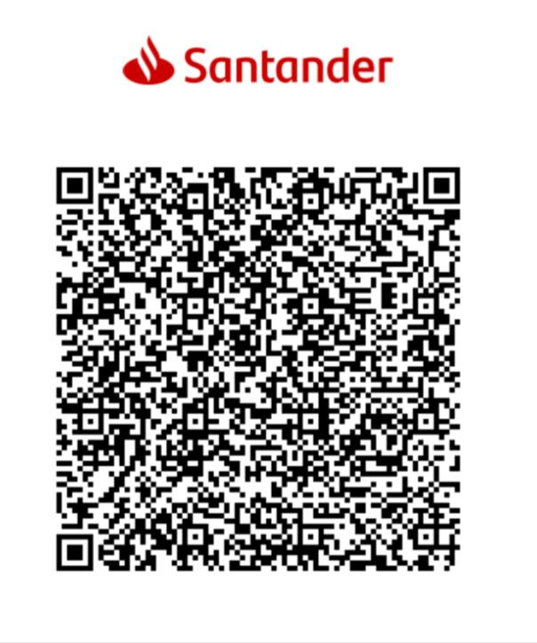

Gostou do que fiz?
Olá, eu sou o Marcos! 👋
Se uma das minhas soluções agilizou seu dia, que tal me pagar um café? ☕
Cada contribuição simbólica me ajuda a continuar desenvolvendo ferramentas que economizam seu tempo e trazem mais praticidade. ❤️
✨ Apoie com um PIX

Escaneie com seu app do banco
repytaofc@gmail.com
Clique na chave acima para copiar
✅ Chave copiada! Agora é só colar no seu app do banco.
Qualquer valor é bem-vindo: R$ 5, R$ 10, R$ 20... ou o que seu coração mandar! 🙏
Obrigado por acreditar no meu trabalho e me ajudar a criar mais soluções!